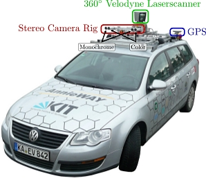
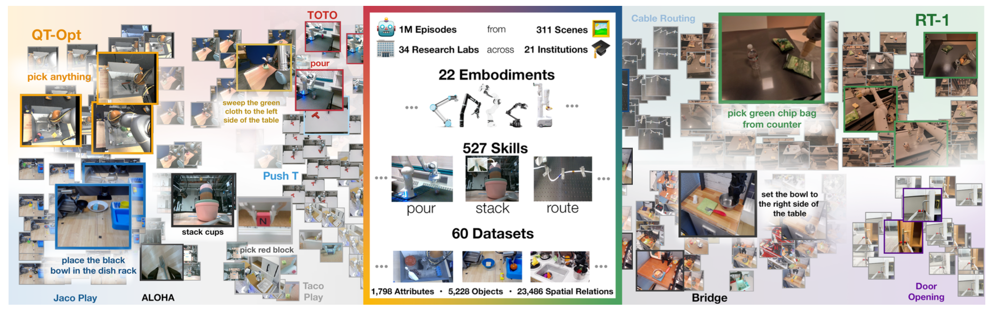
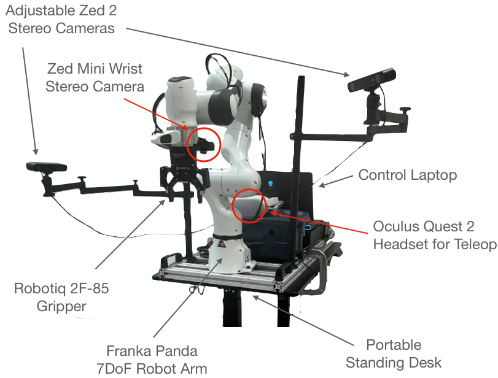
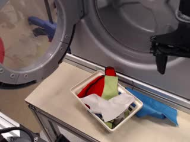
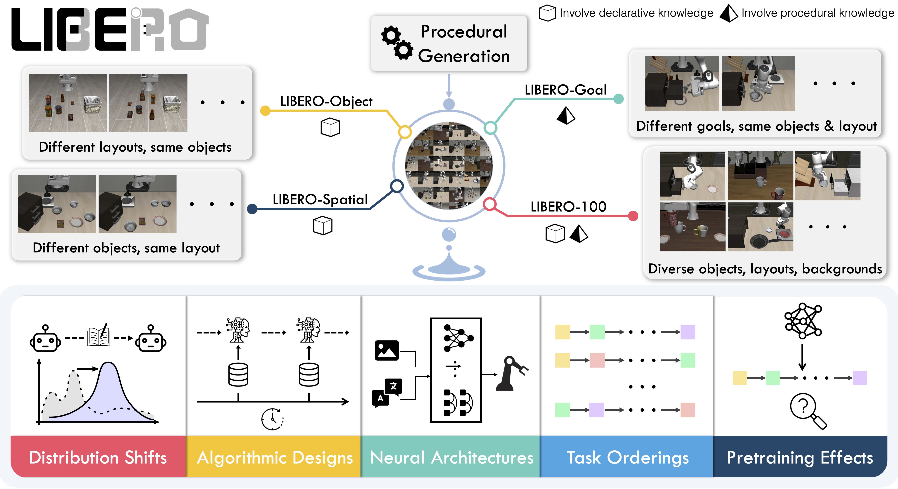
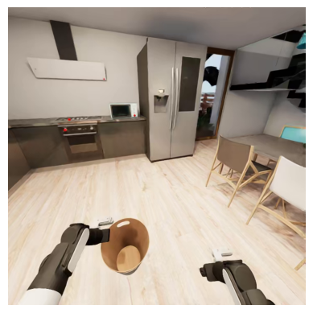

Robotics Datasets: What Each Resource Is For
Choose robotics data by the capability you want to learn or measure. A camera trajectory, a robot demonstration, a navigable room, and an interactive task each provide a different kind of supervision.
This guide expands a survey of robot benchmarks into a practical resource map. Official project pages and documentation were checked on November 27, 2026. Collection sizes refer to the releases described below, and available sensors or labels can vary within a collection.
Choose by the question you want to answer
| Research question | Useful starting points | Supervision or asset | Evaluation to add |
|---|---|---|---|
| Where is the robot, and what is around it? | KITTI, TUM RGB-D, EuRoC, nuScenes | Sensor sequences, trajectories, object annotations. | Trajectory, depth, detection, or tracking error on held-out sequences. |
| How can a robot learn an action from demonstrations? | Open X-Embodiment, DROID, BridgeData V2, robomimic | Observations aligned with actions and task labels. | Closed-loop success on new objects, scenes, or robots. |
| What knowledge transfers across manipulation tasks? | LIBERO, ManiSkill, VLABench | Demonstrations, task definitions, and resettable environments. | Generalization, retention after learning, and task completion. |
| Can a robot complete a household activity? | BEHAVIOR-1K and its challenge demonstrations | Interactive scenes, symbolic goals, long task sequences. | Goal completion, partial progress, elapsed time, and recovery. |
| Can it navigate, fetch objects, or work around people? | HM3D, ReplicaCAD, HomeRobot, Habitat 3.0, SocNavBench, SEANavBench | Scene geometry, task episodes, interactions, pedestrian motion. | Navigation efficiency, retrieval success, collisions, and human comfort. |
A dataset supplies recorded examples or assets. A simulator generates observations as an agent acts. A benchmark adds tasks, splits, metrics, and comparison rules. A challenge runs an evaluation under submission rules. The tables identify the resource type so the name also tells you what you will obtain.
Perception and SLAM: estimate the world and the robot's motion
| Dataset and purpose | Platform and data | Typical task | How to use the result |
|---|---|---|---|
| KITTI Outdoor geometry and driving-scene perception | Vehicle-mounted cameras, LiDAR, and localization data. | Stereo, optical flow, odometry, 3D detection, tracking. | Choose the task-specific split and metric. Different KITTI tracks have different labels. Project and benchmark tracks |
| TUM RGB-D Indoor visual odometry and SLAM | Kinect color and depth sequences with motion-capture camera trajectories. | Estimate camera motion and reconstruct indoor geometry. | Compare trajectories with ground truth, reporting alignment and timestamp association. Dataset and evaluation tools |
| EuRoC MAV Visual-inertial state estimation | Aerial-platform stereo images at 20 Hz, IMU at 200 Hz, calibration, and reference motion. | Fuse vision and inertial measurements under motion and illumination changes. | Inspect camera–IMU timing and ground-truth coverage per sequence. Dataset and downloads |
| nuScenes Multisensor 3D scene understanding | Driving scenes with camera, LiDAR, radar, and annotated objects. | 3D object detection and tracking. | Select the release and official devkit metric for the task. Dataset portal · Evaluation devkit |

These resources support measurement-driven perception research. Their outputs describe motion or scene structure. To test how those estimates affect manipulation or navigation, connect the estimator to a controller and run an additional closed-loop experiment.
Real robot demonstrations: learn what action to take
| Resource and purpose | What it contains | Learning question | What to check |
|---|---|---|---|
| Open X-Embodiment Learn across robot bodies | The original collection pools over one million real trajectories across 22 robot embodiments, using RLDS episodes. | Does experience on one robot improve another robot's policy? | Constituent datasets have different action spaces, sensors, and collection histories. Project and paper · Data access and metadata |
| DROID Generalize across real scenes | 76,000 trajectories, about 350 hours, 564 scenes, and 86 tasks, collected with a portable Franka Panda setup. | How much does environment diversity improve manipulation? | Choose RLDS or raw data and record the calibration and language-annotation version. Project and visualizer · Download guide |
| BridgeData V2 Language- and goal-conditioned manipulation | 60,096 trajectories across 24 environments using a WidowX arm; teleoperated and scripted subsets. | Can a skill follow a new instruction or transfer to a new object or workspace? | Camera availability varies across episodes. Keep scripted and teleoperated sources identifiable. Data, code, and task examples |
| robomimic datasets Study learning from demonstrations | A framework and associated simulated and real manipulation collections, with observations, actions, and episode metadata. | How do demonstrations and learning algorithms affect closed-loop performance? | Name the dataset release, task, and subset rather than only the framework. Dataset catalog and format · Original study |

Diversity across scenes and diversity across bodies
OXE makes data from multiple embodiments available for joint learning. DROID holds the robot platform consistent while moving collection into varied real environments. These designs let researchers ask different transfer questions. A useful experiment records both the source mixture and which objects, scenes, or embodiments are held out.

What an instruction-conditioned example looks like
BridgeData V2 associates trajectories with language and includes actions such as picking, pushing, opening, and cloth handling. Goal-image conditioning provides another way to specify a desired outcome. When building a loader, inspect actual observations per episode before assuming every camera exists. BridgeData V2 collection and sensor details

Simulated manipulation: control the task and the distribution shift
| Resource and purpose | Data and task design | What it tests | Access and interpretation |
|---|---|---|---|
| LIBERO Knowledge transfer and retention | 130 tasks across Spatial, Object, Goal, and LIBERO-100 suites, with human teleoperation demonstrations. | Transfer of spatial, object, and goal knowledge; retention as tasks are learned sequentially. | Report the exact suite and task order. A multitask score alone cannot establish lifelong retention. Code and dataset instructions |
| ManiSkill demonstrations Learn generalizable manipulation at simulation scale | Task-specific demonstrations and replay tools, with actions, environment states, and metadata. | Imitation or reinforcement learning across object variations and control setups. | Some downloads store compact states and require replay to generate images. Match the controller and physics backend. Download and format · Framework |
| BEHAVIOR-1K / 2026 challenge data Long-horizon household work | The full suite defines 1,000 activities. The 2026 demonstration release covers 100 tasks with 20,000 teleoperated trajectories. | Mobile manipulation, multi-step goals, and state-changing object interactions. | Name the task subset and the demonstration release. Full benchmark · Challenge data |
| VLABench Language understanding and long-horizon reasoning | 100 task categories, varied objects, and automated training demonstrations. | Implicit intentions, common sense, spatial relations, and multi-step manipulation. | Identify whether the evaluated component is a language planner or an action policy. Project, data, and code |

Long tasks require goals that capture the intended outcome
BEHAVIOR uses interactive scenes and object-state goals in OmniGibson. Its 2026 challenge demonstration files include RGB, depth, actions, proprioception, and language annotations. This supports learning extended activities and replaying their observations. The 100-task demonstration set covers a subset of the broader 1,000-activity benchmark. BEHAVIOR challenge dataset specification

In these suites, demonstrations provide training examples and the simulator supplies new closed-loop trials. Evaluate novel initial states, objects, and instructions separately, and preserve the version of the environment and success predicates.
Navigation, mobile manipulation, and human interaction
| Resource and purpose | What you obtain | Typical use | Important boundary |
|---|---|---|---|
| HM3D Visual navigation in realistic buildings | A collection described as 1,000 reconstructed indoor spaces from real scans. | Train or evaluate navigation across building layouts in Habitat. | Scene scans supply geometry and appearance. Navigation episodes define the goal and starting state. Dataset and access terms |
| ReplicaCAD Interactive indoor rearrangement | Reconstructed apartment layouts with editable CAD assets. | Object rearrangement and embodied interaction in Habitat. | Choose assets that support the intended interaction. Visual realism alone does not specify contact behavior. Scene assets |
| HomeRobot OVMM Find and move a requested object | A mobile-manipulation stack and benchmark connecting simulated tasks with Stretch robot operation. | Explore, identify an open-vocabulary target, pick it up, and place it on a receptacle. | Report navigation, picking, and placing failures as well as end-to-end success. Code, challenge links, and hardware guidance |
| Habitat 3.0 Human–robot collaboration | Human avatars and interaction scenarios in a simulation platform. | Social navigation and collaborative rearrangement. | Specify simulated behavior and human-in-the-loop conditions. Project and demonstrations |
| SocNavBench Evaluate navigation around people | A simulator and scenarios grounded in recorded pedestrian trajectories. | Compare planners under shared crowd motion. | State whether people replay recorded paths or react to the robot. Code and scenario setup |
| SEANavBench / SEAN 2.0 Social navigation under varied conditions | Simulation and benchmarking tools for navigation among pedestrians. | Study safety and efficiency across crowd conditions. | Report pedestrian behavior and the chosen metrics; human comfort needs an explicit study design. Benchmark · SEAN 2.0 platform |
A room dataset answers where the agent can move. A task episode adds what it must achieve. An interaction protocol specifies how other agents behave. Saving all three makes it possible to distinguish an unfamiliar layout from a failure to coordinate with people.
Safety, data tooling, and the rest of the evaluation stack
| Resource | Purpose and resource type | What to record |
|---|---|---|
| SafeVLA-Bench | A safety-evaluation layer on LIBERO and RoboCasa-365 rollouts, reporting native success, safety, unsafe successes, and violation severity. | The host task, safety specification, and thresholds alongside completion. Official project and release links |
| robosuite | A MuJoCo-based simulation framework for constructing and executing manipulation tasks and collecting experience. | The robot, controller, task configuration, and collected demonstration subset. Project and documentation |
| LeRobot | Policy-learning tools and a shared ecosystem for episode datasets, models, and robot integrations. | The actual dataset identifier, format version, features, and train/evaluation split. Documentation and dataset guides |
| RobotPerf | A robotics-computing benchmark suite for measuring execution performance. | End-to-end latency, throughput, hardware, and measurement boundaries. Benchmark suite |
The supplied survey also covers ISO, ASTM, NIST test methods, and RoboCup competitions. Those address hardware performance, safety requirements, or complete-system evaluation. This article focuses on resources for training and testing data-driven capabilities; a deployment study can add the relevant physical tests to that evaluation plan.
Turn a dataset choice into an experiment
Example: a household fetch-and-place robot
Use indoor scene assets and navigation episodes to test finding a named object. Pretrain or adapt manipulation from demonstrations compatible with the robot's action space. Use a controlled manipulation suite to vary object and goal conditions. Finally, run complete fetch-and-place trials on hardware, keeping failed picks, recovery attempts, elapsed time, and operator interventions in the log. This proposal combines the resource types above into a measurable research plan.
- Specify the unit. Count episodes, timesteps, hours, scenes, and tasks separately. Frame count can be dominated by repeated views of the same behavior.
- Match the action interface. Record joint or end-effector commands, reference frames, control frequency, gripper conventions, and action scaling.
- Hold out the intended source of change. A new scene, object instance, task, or robot body tests a different generalization question. Split related trajectories together.
- Check available supervision. Inspect language quality, synchronization, calibration, depth coverage, failure episodes, and which sensors exist in each sample.
- Record provenance and access. Save the dataset release, constituent mixture, download source, terms, preprocessing, and simulator version.
- Test closed-loop behavior. Pair task success with partial progress, time, interventions, and safety measures appropriate to the deployment.
Dataset scale helps only when the examples, action semantics, and evaluation conditions match the research question. The practical output of this selection process is a documented training mixture and a set of held-out tests that expose the capability you want to improve.